一文看懂Power Platform 和 Teams的整合
原文发表于 2021-03-11, 地址: http://www.cnblogs.com/chenxizhang/p/14519781.html
大家知道，Microsoft Teams 正在飞速增长，目前每天的活跃商业用户大约在1.5亿左右，各地用户通过Teams开会的时间，每天超过50亿分钟；另外一方面，全球财富500强的客户中，超过97%的客户都在使用Microsoft Power Platform，那么这两个平台强强联手起来是一个什么效果呢？能够给客户和用户带来什么样的收益呢？本文将简要地列出他们整合的场景。
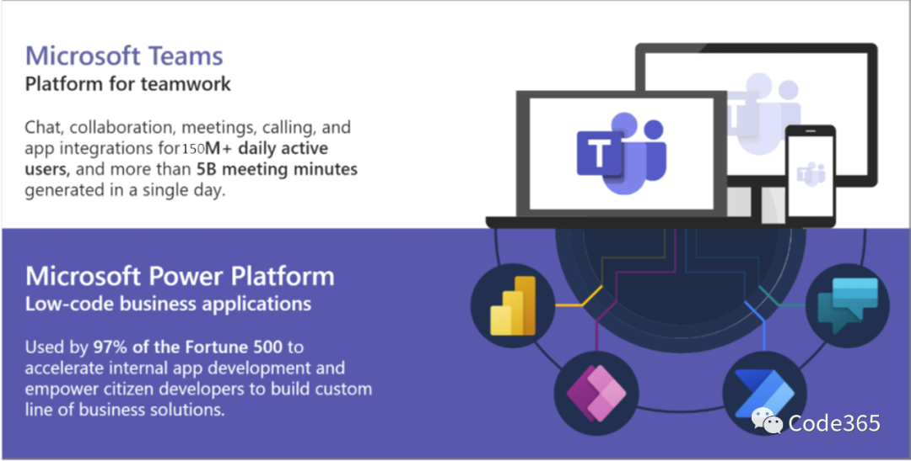
了解Microsoft Teams，请访问：https://www.microsoft.com/zh-cn/microsoft-teams/group-chat-software, 请注意，目前Teams还没有国内专门的版本，您可以使用国际版，或者永久免费版。
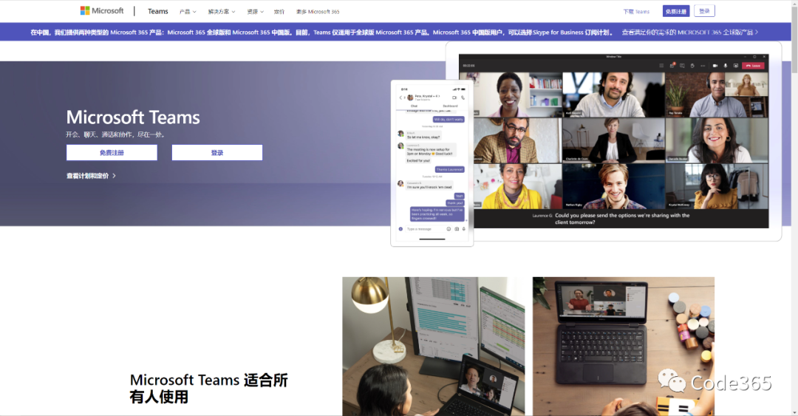
如想了解Microsoft Power Platform，请访问 https://powerplatform.microsoft.com/zh-cn/，值得一提的是，Power Platform中，Power Virtual Agents之外其他三个组件，除了国际版，我们在国内有专门的版本可供选择。【但要注意，下面提到的整合，由于Teams目前只有国际版，所以对应的Power Platform也需要是国际版】

言归正传，我们来看看Power Platform四大组件，分别可以在Microsoft Teams中如何进行整合吧。
Power Apps + Teams
- 您可以将现有的Power Apps 应用（Canvas应用和Model-Driven应用都可以），作为Teams中的一个频道选项卡应用添加进来，给团队成员使用。这个适合有协作的场景，例如提交团队工作日记，或者任务管理等。 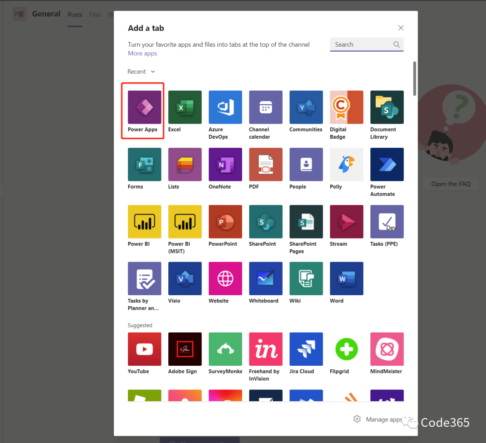
- 您可以将现有的Power Apps 应用（主要指Canvas应用），作为Teams的个人应用安装，给用户单独使用。这个适合一些自我管理的场景，例如培训学习，知识管理等。

- 直接在Teams中设计和开发PowerApps应用。安装PowerApps这个Teams应用，你可以在不离开Teams的情况下，为你的团队开发和设计新的应用，并且可以一键部署到频道。 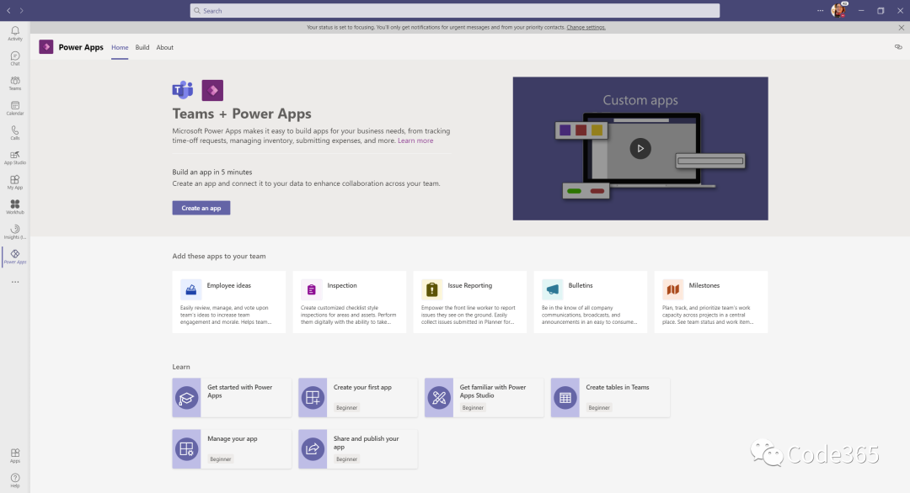
- Teams会为PowerApps的开发提供上下文支持，以及性能优化（通过预加载等技术实现），以便使PowerApps运行更加流畅。
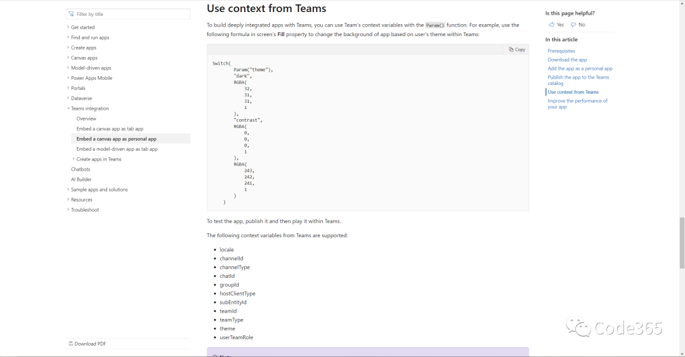
Power Automate + Teams
- 基于Teams的聊天消息触发 Power Automate的流程。这是一个新功能，我在此前的文章中有介绍，非常强大，有兴趣可以参考。【Microsoft Teams最新功能发布 – 平台篇】，原本这是要通过编写"消息扩展"的方式来实现的场景，现在用PowerAutomate来对接，实现无限可能。
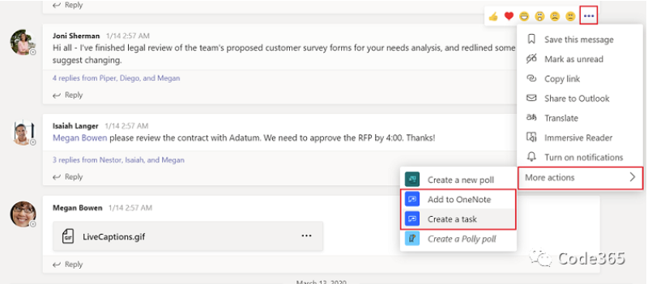
- 通过Power Automate 给 Teams发送卡片消息。这个场景特别适合于跟外部系统对接，例如某个后台系统有一个通知要发送，或者要收集用户的反馈，通过这个来实现，真的是很方便，很松耦合。这已经应用非常广泛了，而且也是我看待低代码平台和现有系统的一个角度，他们是共存的，未来是混搭的。我可以有很多案例分享这样的例子，现在要开发一个新的功能，我一般都会先想一下，哪些环节可以用低代码来实现，哪些不能？让低代码做它擅长的东西，而开发人员可以专注在一些必须写代码实现的环节。关于如何看待低代码趋势和开发人员的未来，我昨天也发了一篇文章，分享了一些自己的浅见，有兴趣可以在访问【谈谈低代码趋势和开发人员的未来】
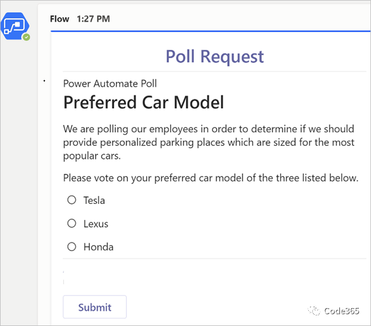
在Power Automate中有大量跟Teams相关的模板和组件可以直接用，例如
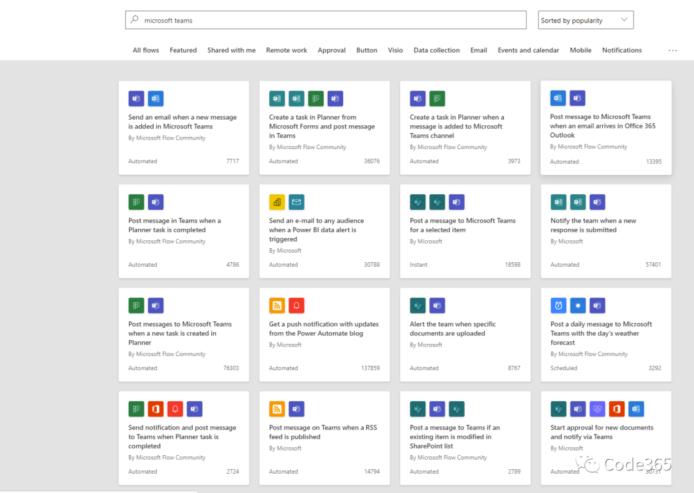
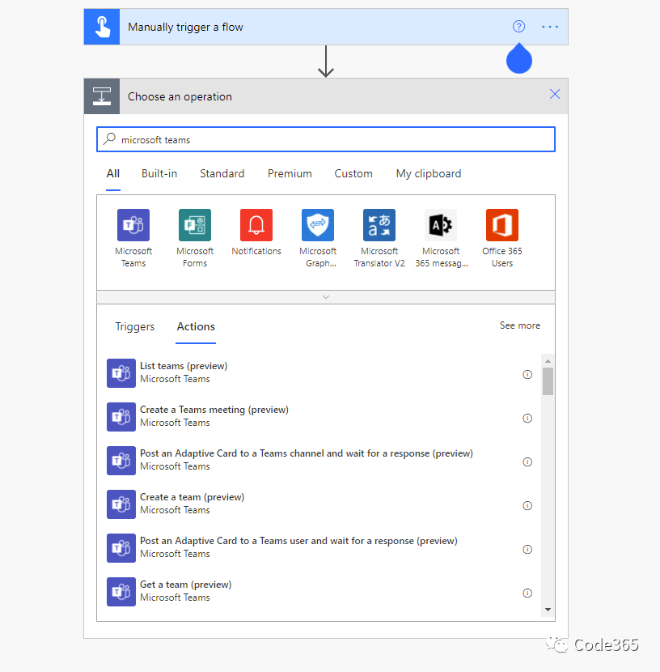
- 直接在Teams中设计、开发、管理 Power Automate的流程。跟上面提到的PowerApps应用一样，你现在也可以在不离开Teams的情况下，进行Power Automate的完整生命周期开发管理了。 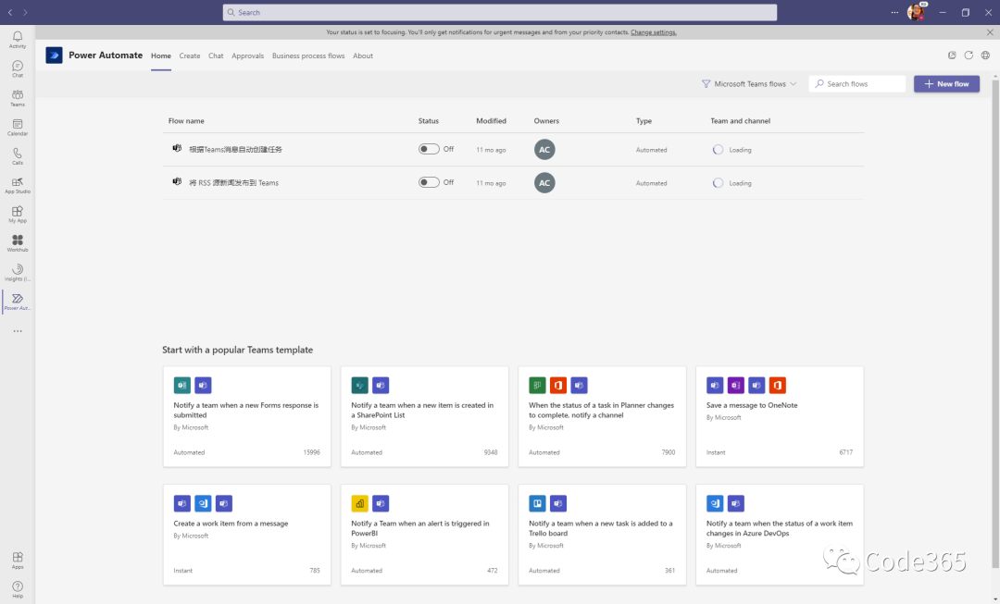
Power BI + Teams
- 把现有的Power BI的报表，在Teams的频道选项卡上面使用。这用来分享给团队报表链接，以便快速访问，很方便实现。 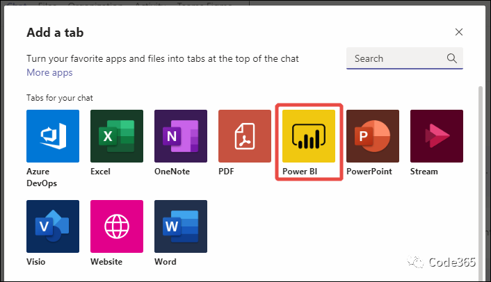
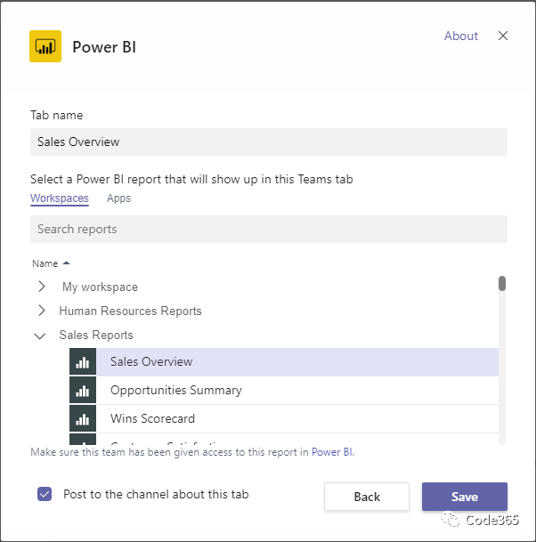
- 在Teams中自动识别 PowerBI 报表的链接，并且在消息中展示预览。这样可以让用户的沟通更加有效率，相比较一个文本链接而言，显然有下面这样的丰富信息提示，以及相关操作的按钮，会更加直观传递信息，也帮助用户更快地采取行动。
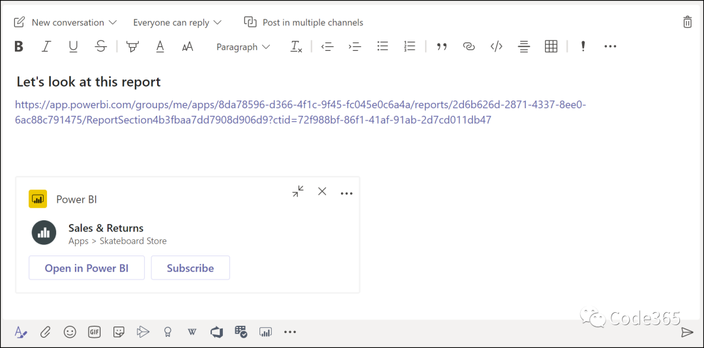
- 随时从PowerBI 的报表发起Teams对话，自动打开分享对话框，把当前的链接和相关的上下文信息带到对话中来，如丝般顺滑的体验。
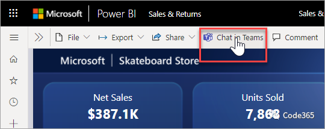
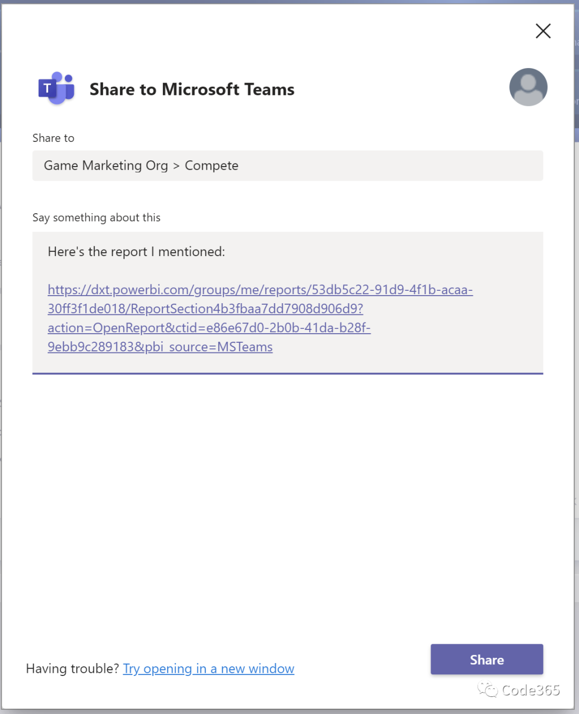
- 在 Teams 中直接管理Power BI 设计、开发、管理 Power BI 资源。

Power Virtual Agents + Teams
- 在 Teams 中创建 、调试、发布、管理PVA 机器人。
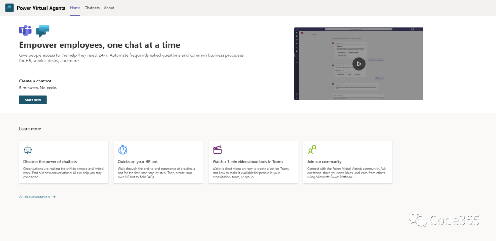
- 将现有PVA 机器人添加到 Teams。
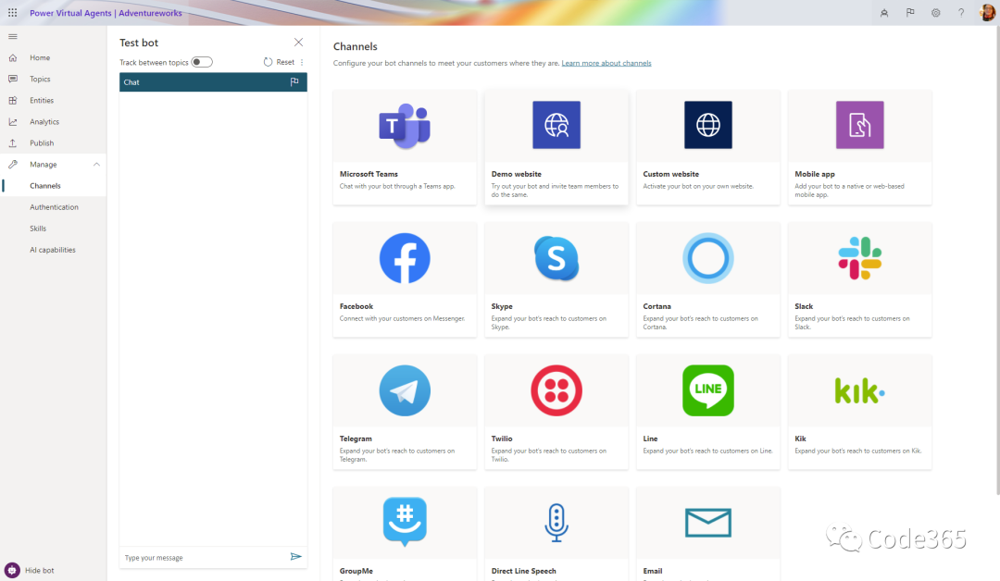